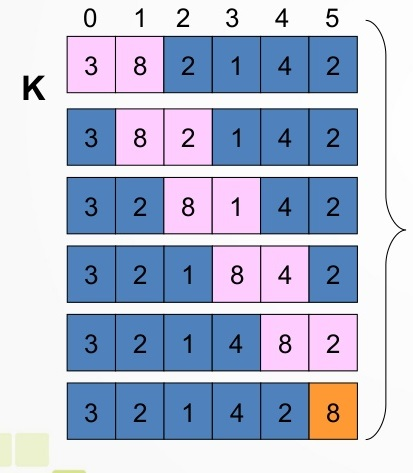
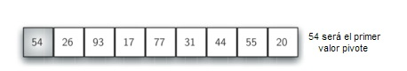
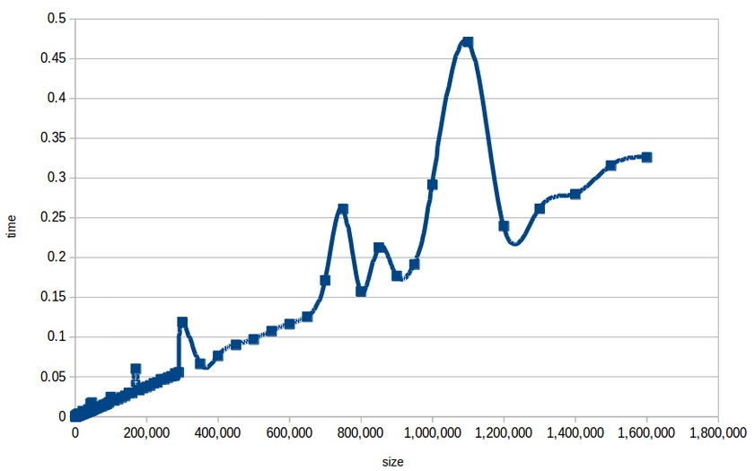

Algoritmos de Ordenamiento
TP 2 - Estructura de Datos - 2020
Cichello, Alan / Guzmán, Hernán
Prof. Gonzalez, Sergio
Comparativa entre los distintos algoritmos de ordemaniento
Los algoritmos que se analizarán serán:
Burbuja (Bubble Sort)
Inserción (Insertion Sort)
Mezcla (Merge Sort)
Rápido (Quicksort)
Selección (Selection Sort)
Algaritmo de Burbuja
La forma en que funciona este algoritmo es recorriendo la lista y comparando los valores entre si.
Por ejemplo:
Compara el valor de la posición 0 con la 1, si el valor de la posición 1 es menor que el valor de la posición 0 se intercambian los valores entre si. Si el valor de la posición 0 es menor no se intercambian
Después compara el valor de la posición 1 con el valor de la posición 2 y realiza el mismo procedimiento anterior.
Por lo tanto el algoritmo recorrera la lista tantas veces como se anecesario hasta ordenar todos los valores.
Se le llama algoritmo de burbuja porque los números más pequeños burbujean a la superficie que sería lo más cerca de la posición 0
Primer recorrido a toda la lista
Segundo recorrido a toda la lista
Tercer recorrido a toda la lista
Cuarto recorrido a toda la lista
Quinto recorrido a toda la lista
Rendimiento del algoritmo
Fórmula para calcular el rendimento del algoritmo:
Siendo n la cantidad de registros de la lista. Por lo que para el caso más desfavorable, si tenemos una lista ordenada de forma descendente. La fórmula en este caso sería:
Gráfica de comportamiento:
Algoritmo de Inserción
Se parte de un elemento incial k después se toma el elemento k+1 y se lo compara con todos los elementos ya ordenados, osea k, y se detiene cuando encuentra un número menor o cuando ya no haya elementos. En ese punto se inserta el elemento k+1 y pasa al listado de k.
Ejemplo en el que el elemento k+1 es el número 31. La lista de elementos ordenados k son los números 17, 26, 54, 77, 93.

Rendimiento del algoritmo
En el caso de que los elementos se encuentren ordenados el algoritmo realizará n comparaciones, siendo n el número de elementos de la lista:
En el caso que todos los elementos de la lista estén ordenados de forma descendente la fórmula para el rendimiento del algoritmo es:
Gráfica de comportamiento:
Algaritmo de Mezcla
Esta basado en la técnica de divide y vencerás.
Es un algoritmo recursivo que divide continuamente una lista por la mitad.
Si la lista está vacía o tiene un solo ítem se ordena por definición (el caso base). Si la lista tiene más de un ítem dividimos la lista e invocamos recursivamente un ordenamiento por mezcla para ambas mitades.
Una vez que las dos mitades están ordenadas se realiza la operación fundamental denominada mezcla. La mezcla es el proceso de tomar dos listas ordenadas más pequeñas y combinarlas en una sola lista nueva y ordenada.
Partimos de una lista de 9 números enteros y se va dividiendo por la mitad hasta obtener una lista de un solo número.

Cuando ya tenemos dos listas ordenadas comenzamos a mezclarlas para obtener una lista nueva y ordenada.
Para realizar la división de la lista se utiliza una función recursiva hasta obtener una lista de un solo número.

Rendimiento del algoritmo
Como no es necesaria la búsqueda en toda la lista sino en pociones mas pequeñas se dice que la fórmula de este algoritmo es:
Este algoritmo es utilizado por Perl 5.8 por defecto y el ordenamiento de Arrays en Java se realiza con este mismo algoritmo.
Gráfica de comportamiento:
Código
Para realizar la división de la lista se utiliza una función recursiva hasta obtener una lista de un solo número.
def ordenamientoPorMezcla(unaLista, listaCompleta):
print("Dividir ",unaLista)
if len(unaLista)>1:
'''divido la tabla en dos'''
mitad = len(unaLista)//2
'''DE LA MITAD TOMO LA PARTE DERECHA'''
mitadIzquierda = unaLista[:mitad]
'''DE LA MITAD TOMO LA PARTE IZQUIERDA'''
mitadDerecha = unaLista[mitad:]
'''UTILIZO RECUSRSIVIDAD PARA VOLVER A DIVIDIR LA LISTA'''
ordenamientoPorMezcla(mitadIzquierda, listaCompleta)
ordenamientoPorMezcla(mitadDerecha, listaCompleta)
ordenar(mitadIzquierda, mitadDerecha)
print("Arreglo completo:",listaCompleta)
Cuando la lista tiene un solo número llama a la función ordenar para que los números se mezclen de forma ordenada en la lista. Consultando si la mitad izquierda
def ordenar(mitadIzquierda, mitadDerecha):
i, j = 0,0
k=0
result = np.zeros(len(mitadIzquierda) + len(mitadDerecha), int)
while i < len(mitadIzquierda) and j < len(mitadDerecha):
if mitadIzquierda[i] < mitadDerecha[j]:
result[k] = mitadIzquierda[i]
i=i+1
else:
result[k]=mitadDerecha[j]
j=j+1
k=k+1
'''SI TENGO MAS NUMEROS EN LA MITAD IZQUIERDA LOS RECORRO Y LOS AGREGO'''
while i< len(mitadIzquierda):
result[k] = mitadIzquierda[i]
i=i+1
k=k+1
'''SI TENGO MAS NUMEROS EN LA MITAD DERECHA LOS RECORRO Y LOS AGREGO'''
while j< len(mitadDerecha):
result[k] = mitadDerecha[j]
j=j+1
k=k+1
i, j = 0,0
for num in result:
if(i<=len(mitadIzquierda) - 1):
mitadIzquierda[i] = num
i = i+1
else:
mitadDerecha[j] = num
j=j+1
Algaritmo Rápido
Primero se selecciona un elemento de la lista a ordenar al que se le llamará pivote. Luego se recorre la lista y se sitúan los números menores a un costado de la lista y los mayores al otro lado.
Como resultado se tienen dos sublistas. Para continuar con el procedimiento se deberá realizar el mismo paso anterior, se elegirá un pivote por cada lista y se obtendrán dos sublistas.
Cuando las listas resultantes tengan un solo elemento se tendrá ordenada la lista principal.
Se elige el primer pivote, que en este caso será 54
Se eligen dos marcadores de posición marcaIzq y marcaDer que se encontrarán al principio y final de los items restantes de la lista. El objetivo es mover los items que estén en el lado equivocado.
Pasos
Rendimiento del algoritmo
La eficiencia del algoritmo depende de la elección del pivote.
El mejor caso se produce cuando el pivote termina en el centro de la lista. Para este caso la fórmula del algoritmo será:
El peor caso se produce cuando el pivote se encuentra en un extremo de la lista. El orden de complejidad del algoritmo será:
Gráfica de comportamiento:
Algaritmo de selección
Primero se busca el elemento máximo de la lista y se intercambia por el último.
Luego se busca el siguiente número máximo de la lista y se intercambia por el anteúltimo.
Y asi se continua hasta terminar con todos los elementos de la lista
Su funcionamiento es un poco mejor que el del algoritmo de burbuja ya que realiza un solo intercambio por pasada
Pasos
Rendimiento del algoritmo
Siendo n la cantidad de registros de la lista. Por lo que para el caso más desfavorable, si tenemos una lista ordenada de forma descendente. La fórmula en este sería:
Gráfica de comportamiento:
Gráfico de comparación
En el gráfico se puede observar que el algoritmo con peor comportamiento es el de Burbuja seguido por el de Inserción y después el de Selección. Los que tienen un comportamiento parecido son el de Mezcla y el Rápido
Algoritmo de Búsqueda
Búsqueda Binaria
Se parte desde una lista ordenada, como la que devuelve del algoritmo anterior. Lo que realiza esta búsqueda es consultar si el valor buscado se encuentra en la mitad, sino es así, consulta si el valor a buscar es mayor al que se encuentra en la mitad de la lista.
Si es mayor se continuará la búsqueda en la mitad con valores mayores. Realizando el procedimiento anterior.
Ahora si el valor es menor, la búsqueda se realizará en la mitad con los valores menores.
Lo que devuelve la función, es si el número se encuentra o no en la lista. Recibirá por parámetro la lista y el valor que se buscará en ella.
def busquedaBinaria(arrayOrdenado, valorABuscar):
if len(arrayOrdenado) == 0:
return False
else:
posicionMitad = len(arrayOrdenado)//2
if arrayOrdenado[posicionMitad]==valorABuscar:
if valorABuscar< arrayOrdenado[posicionMitad]:
return busquedaBinaria(arrayOrdenado[:posicionMitad],valorABuscar)
else:
return busquedaBinaria(arrayOrdenado[posicionMitad+1:],valorABuscar)
else:
return True